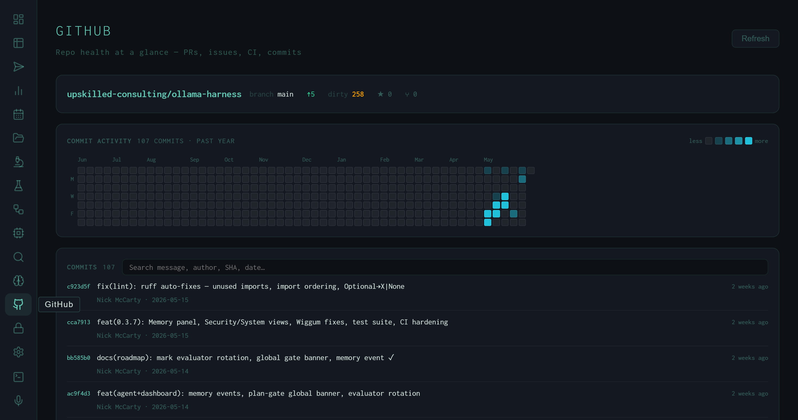
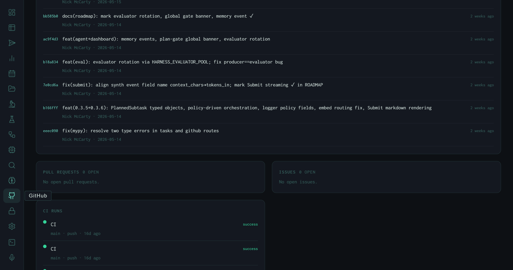
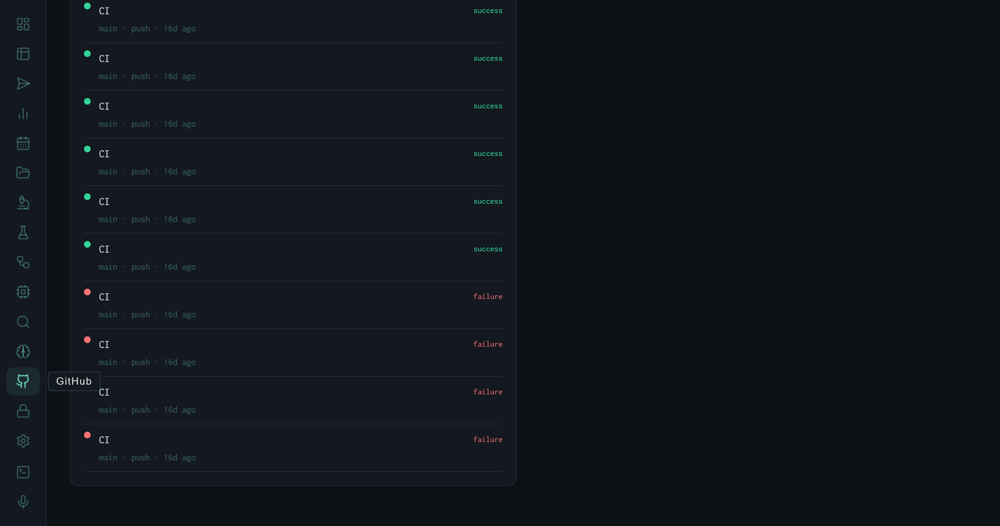

The GitHub View: Repo Health at a Glance
The harness dashboard includes a GitHub panel that pulls live repo telemetry: branch status, ahead/dirty counts, a full-year commit heatmap, a searchable commit log, open PRs and issues, and a CI run history with pass/fail status. The goal is to answer "is the repo healthy right now?" without leaving the dashboard.
When you're running experiments, reviewing outputs, and iterating on synthesis instructions, context-switching to GitHub to check CI status or scan the commit log breaks flow. The GitHub view brings the repo surface into the same environment as everything else — the same dark-mode dashboard, the same monospace aesthetic, updated on demand with a Refresh button.
View subtitle: Repo health at a glance — PRs, issues, CI, commits.
The Repo Header

The GitHub view: repo header with branch/ahead/dirty counts, a 107-commit year-long heatmap, and the searchable commit log.
The top of the view is a compact repo header with five pieces of live state displayed inline:
The "ahead" count and dirty count are the two most actionable signals. Five commits ahead means there's unpushed work; 258 dirty files is expected for an active research repo where model weights, experiment outputs, and generated data accumulate in the working tree. These numbers update each time you hit Refresh.
The Commit Heatmap
Below the header is a GitHub-style contribution heatmap spanning the past year. The cells are colored by commit density: darker teal for heavy days, faint for sparse days, blank for zero. The label reads 107 commits · past year.
Reading the heatmap: the left two-thirds (Jun 2025 – Feb 2026) shows low but steady activity. The right third (Mar–May 2026) shows a sharp acceleration — the teal cluster on the far right represents the most recent sprint. This maps directly to when the autoresearch loop, the RAG enrichment experiments, and the dashboard itself were built out.
The Commit Log
The commit list below the heatmap shows all 107 commits from the past year in reverse-chronological order, with SHA, message, author, and relative timestamp. A search box at the top of the list filters by message text, author, SHA, or date — useful for locating when a specific change landed without leaving the dashboard.
The commit messages visible in the screenshot give a representative sample of what the autoresearch loop produces as its primary artifact: one commit per experiment iteration, each message encoding exactly what changed and why. Examples from the top of the log:
Pull Requests and Issues

PRs and Issues panels (both clear) and the beginning of the CI run history.
Below the commit log, the view splits into two side-by-side panels: Pull Requests and Issues. Both currently read zero open. This is a solo research repo where changes go directly to main — PRs are reserved for cases where a change needs isolation before merging (model weight changes, breaking API changes, major refactors). The zero-issue count reflects the same: tracking is done in experiment notes and the autoresearch log rather than GitHub issues.
For team deployments, these panels would surface open review work and outstanding bugs without navigating away from the experiment dashboard. The panels are live — they update each time the Refresh button is pressed.
CI Run History

The CI run history: green dots for passing runs, red for failures. Branch, trigger type, and relative time are shown per entry.
The bottom section of the view is the CI run list. Each entry shows the workflow name, branch, trigger event (push), relative timestamp, and a colored status dot: success or failure.
The history visible in the screenshot shows a characteristic pattern: a run of green success entries from recent pushes, then a cluster of red failures from ~16 days ago. That failure cluster corresponds to the period when the dashboard was being wired up — the CI pipeline runs the test suite, and the test suite was breaking as new views were added. Once the suite was updated to cover the new endpoints, CI went green and has stayed there.
The CI panel turns the GitHub view into a lightweight incident surface. If a push breaks the suite, the red dot appears here within minutes — without opening a separate tab.
What It's For
Pre-experiment check
Before starting a long run, glance at the CI panel to confirm the last push is green. A red dot means there's a broken state that might affect the run's output or logging.
Commit archaeology
Search the commit log by keyword to locate when a specific instruction change or tool fix landed. Faster than git log --grep when you don't remember the exact phrasing.
Unpushed work awareness
The "ahead" counter in the repo header is a persistent reminder of commits that haven't been pushed. At five commits ahead, a push is overdue.
Velocity signal
The heatmap's density pattern shows whether the repo has been active or dormant. At a glance it answers: "was this week a real sprint or did we coast?"
The GitHub view doesn't replace GitHub. It removes the context switch for the subset of repo information that matters while running experiments: is CI green, what was the last commit, is there anything open that needs attention? For everything else — reviewing diffs, writing PR descriptions, managing branches — the full GitHub interface is still the right tool.